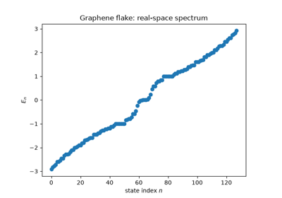
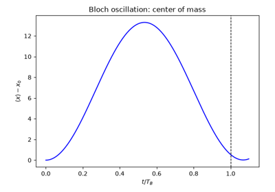
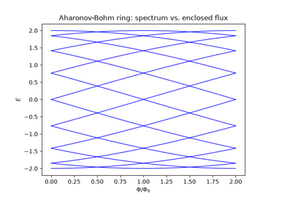
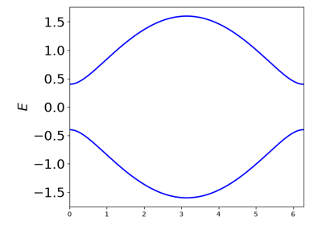
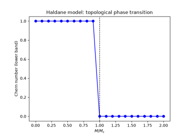
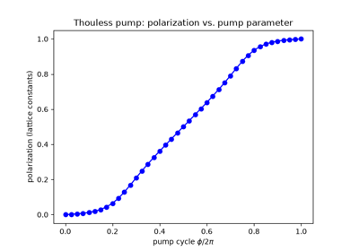
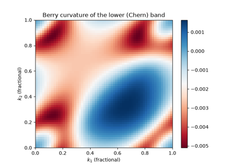

History#
“It was found that the wave functions […] in a periodic potential have exactly the form of a modulated plane wave.” – F. Bloch, 1928
A chronology of the breakthroughs behind Tight-Binding theory, from
Bloch’s 1928 theorem to the topological insulators of the 2000s. Every
stop below has a pointer to the corresponding tbkit functionality and
a short, runnable, numerically-verified example in examples/ –
nothing here is asserted without also being checked in code.
1928 – Bloch’s Theorem and Band Theory#
Felix Bloch showed that the eigenstates of a single electron in a perfectly periodic crystal potential \(V(\mathbf{r}) = V(\mathbf{r} + \mathbf{R})\) take the form
turning the Schrodinger equation for an infinite solid into a finite eigenvalue problem \(H(\mathbf{k})u_{n\mathbf{k}} = E_n(\mathbf{k}) u_{n\mathbf{k}}\) at each crystal momentum \(\mathbf{k}\), periodic on the Brillouin zone torus. This single idea – that a crystal’s electronic structure decomposes into bands \(E_n(\mathbf{k})\) – is the foundation every model in tbkit is built on.
Implementation: tbkit.kspace.KSpace builds \(H(\mathbf{k})\)
directly by Bloch-summing real-space hoppings tagged by which
neighboring unit cell they connect to; get_bands(),
k_path(), and mesh_bands()
diagonalize it at a point, along a path, or over the whole Brillouin
zone. tbkit.kspace.reciprocal_vectors() gives the dual lattice
vectors \(\mathbf{b}_i\) (\(\mathbf{a}_i\cdot\mathbf{b}_j =
2\pi\delta_{ij}\)) that the Brillouin zone is built from.
References: F. Bloch, “Uber die Quantenmechanik der Elektronen in Kristallgittern,” Z. Phys. 52, 555-600 (1929).

Graphene: Real-Space Flake and Reciprocal-Space Bands
1929/1960 – Bloch Oscillations and the Wannier-Stark Ladder#
Bloch pointed out an immediate, counterintuitive consequence of his own theorem: a uniform force on an electron in a periodic lattice does not uniformly accelerate it, the way it would in free space. Instead, Bloch’s argument and its later formalization by Gregory Wannier show the electron oscillates periodically in real space, with period \(T_B = 2\pi/F\) (\(\hbar=1\)), while the spectrum of the tilted lattice collapses into an exactly evenly spaced ladder,
the Wannier-Stark ladder, with every eigenstate exponentially localized around its own lattice site by the tilt alone – a deterministic cousin of Anderson localization (1958, below). In real crystals scattering happens on a timescale far shorter than \(T_B\), which is why the effect went unobserved for over 60 years; it took artificial semiconductor superlattices, with a far larger effective lattice constant and hence much shorter \(T_B\), to see it directly.
Implementation: a uniform force is exactly a linear onsite potential
gradient, so no dedicated function is needed:
tbkit.system.System.set_onsite_def() applies it directly, and
tbkit.propagation.Propagation (see 1954 below for the general
Tight-Binding framework it operates on) evolves a wavepacket under the
resulting tilted Hamiltonian.
References: F. Bloch, Z. Phys. 52, 555-600 (1929); G. H. Wannier, “Wave functions and effective Hamiltonian for Bloch electrons in an electric field,” Phys. Rev. 117, 432-439 (1960); experimentally confirmed by C. Waschke et al., “Coherent submillimeter-wave emission from Bloch oscillations in a semiconductor superlattice,” Phys. Rev. Lett. 70, 3319-3322 (1993).

Bloch Oscillations and the Wannier-Stark Ladder
1933 – The Peierls Substitution#
Rudolf Peierls showed how to add a magnetic field to a tight-binding model without abandoning the lattice: each hopping amplitude picks up a phase equal to the line integral of the vector potential along the bond,
with \(\Phi_0 = h/e\) the flux quantum. Because the phase around any closed loop of bonds is gauge-invariant and equals \(2\pi\) times the flux threading it, this recipe reproduces the Aharonov-Bohm and quantum Hall physics below directly on a lattice, without ever solving the continuum Schrodinger equation in a field.
Implementation: tbkit.system.System.set_peierls_phase() applies an
arbitrary phase function (any gauge, any spatial field profile);
set_magnetic_field() is a symmetric-gauge
convenience wrapper for a uniform field, \(\phi_{ij} =
\pi\alpha(x_iy_j - x_jy_i)\) with \(\alpha = B/\Phi_0\).
References: R. Peierls, “Zur Theorie des Diamagnetismus von Leitungselektronen,” Z. Phys. 80, 763-791 (1933).

Aharonov-Bohm Ring: A Magnetic Field on a Lattice
1947 – Wallace’s Tight-Binding Prediction of Graphene#
Seventeen years before it had a name and fifty-seven years before it was isolated, graphene’s electronic structure was already known: P. R. Wallace worked out the tight-binding band structure of a single honeycomb sheet of carbon (as a stepping stone to understanding bulk graphite) and found something no one had seen in a solid before. The two bands touch at the corners of the hexagonal Brillouin zone, and expanding the dispersion around one such point \(\mathbf{K}\) gives, to leading order,
a dispersion that is linear in momentum rather than the usual quadratic \(\hbar^2q^2/2m^*\). Electrons near \(\mathbf{K}\) therefore behave as massless, relativistic (Dirac) particles with an effective speed of light \(v_F = 3ta/2\), decades before “Dirac fermions in condensed matter” became a field in its own right.
Implementation: no new code – this is the same honeycomb
tbkit.kspace.KSpace Hamiltonian used throughout this chronology,
evaluated at momenta offset from \(\mathbf{K}\) by a small
\(\mathbf{q}\).
References: P. R. Wallace, “The Band Theory of Graphite,” Phys. Rev. 71, 622-634 (1947).
Graphene: Real-Space Flake and Reciprocal-Space Bands
1954 – The Slater-Koster Tight-Binding Framework#
John Slater and George Koster showed how to build realistic band structures from a minimal empirical basis: a linear combination of atomic orbitals (LCAO), with hopping matrix elements between neighboring orbitals as fitting parameters rather than computed from first principles. This traded first-principles rigor for tractability and physical transparency, and remains the standard language for model-building in condensed matter theory – it is, in effect, the specification tbkit itself implements: define a unit cell of orbitals, define hoppings between them, and let the code Bloch-sum or diagonalize the result.
Implementation: tbkit.lattice.Lattice (the unit cell and its
translations), tbkit.system.System (finite, real-space
Hamiltonians) and tbkit.kspace.KSpace (periodic, reciprocal-space
Hamiltonians) are exactly this LCAO philosophy, general enough to cover
every other model in this chronology. tbkit.lattices collects
several standard unit cells (chain, square, triangular, honeycomb,
kagome, Lieb) ready to use instead of specifying unit_cell/prim_vec
by hand.
References: J. C. Slater and G. F. Koster, “Simplified LCAO Method for the Periodic Potential Problem,” Phys. Rev. 94, 1498-1524 (1954).
1958 – Anderson Localization#
Philip Anderson showed that quenched, random disorder is not a small perturbative correction to a metal’s conductivity but can halt transport outright: interference between all the scattering paths off a random potential exponentially localizes every electronic eigenstate, at any nonzero disorder strength, in one and two dimensions. A localized state’s character is diagnosed by its Inverse Participation Ratio,
which is \(O(1/N)\) for a state spread over all \(N\) sites (extended) and \(O(1)\) for a state pinned to a handful of them (localized).
Implementation: tbkit.system.System.set_onsite_dis() and
set_hopping_dis() add uniform random disorder to
the onsite energies/hoppings; get_ipr() computes
\(\mathrm{IPR}_n\) for every eigenstate.
References: P. W. Anderson, “Absence of Diffusion in Certain Random Lattices,” Phys. Rev. 109, 1492-1505 (1958).
1959 – The Aharonov-Bohm Effect#
Yakir Aharonov and David Bohm pointed out a startling consequence of quantum mechanics: a charged particle’s phase is affected by the vector potential \(\mathbf{A}\) even in a region where the magnetic field \(\mathbf{B}=\nabla\times\mathbf{A}\) itself vanishes identically – only the enclosed flux \(\Phi = \oint\mathbf{A}\cdot d\mathbf{l}\) matters, and only modulo the flux quantum \(\Phi_0\). On a ring threaded by flux \(\Phi\), this makes the energy spectrum exactly periodic in \(\Phi\) with period \(\Phi_0\).
Implementation: directly reproduced by
tbkit.system.System.set_magnetic_field() (see 1933 above) applied to
a ring-shaped Lattice.
References: Y. Aharonov and D. Bohm, “Significance of Electromagnetic Potentials in the Quantum Theory,” Phys. Rev. 115, 485-491 (1959).
Aharonov-Bohm Ring: A Magnetic Field on a Lattice
1930/2005 – Landau Levels: From Free Electrons to Graphene’s Dirac Fermions#
Lev Landau showed in 1930 that a charged particle confined to a plane under a uniform perpendicular magnetic field has a spectrum that collapses from a continuum into a ladder of discrete, macroscopically degenerate levels – Landau levels – each level’s degeneracy set purely by the number of flux quanta threading the sample. Applied to a lattice via the Peierls substitution above, at weak field (magnetic length much larger than the lattice spacing) the same quantization survives near a band’s parabolic edge, evenly spaced by the cyclotron frequency \(\omega_c = eB/m^*\),
Seventy-five years later, Konstantin Novoselov, Andre Geim, and coworkers, and independently Yuan Zhang, Yuanbo Tan, Horst Stormer, and Philip Kim, measured graphene’s Landau levels directly and found something Landau’s original theory never anticipated: because graphene’s low-energy electrons obey Wallace’s linear (massless-Dirac) dispersion above rather than the usual parabolic one, the ladder is spaced by \(\sqrt{n}\) rather than \(n\), and centered on an exact zero-energy level present at any field strength – a direct experimental fingerprint, via the resulting anomalous quantum Hall sequence, that graphene’s charge carriers behave as massless Dirac fermions rather than ordinary electrons.
Implementation: both ladders come from exactly the same
tbkit.system.System.set_magnetic_field() used throughout this
chronology, applied to two different finite flakes: a square lattice
(parabolic band edge) and a graphene flake built from
tbkit.graphene.GrapheneLattice (linear Dirac dispersion). No
dedicated Landau-level function is needed – the quantization is an
emergent, weak-field limit of the same Peierls-substituted Hamiltonian
Hofstadter’s full flux sweep uses below.
References: L. Landau, “Diamagnetismus der Metalle,” Zeitschrift fur Physik 64, 629-637 (1930); K. S. Novoselov, A. K. Geim, S. V. Morozov, D. Jiang, M. I. Katsnelson, I. V. Grigorieva, S. V. Dubonos, and A. A. Firsov, “Two-Dimensional Gas of Massless Dirac Fermions in Graphene,” Nature 438, 197-200 (2005); Y. Zhang, Y.-W. Tan, H. L. Stormer, and P. Kim, “Experimental Observation of the Quantum Hall Effect and Berry’s Phase in Graphene,” Nature 438, 201-204 (2005).
Example: examples/magnetic_field/plot_landau_levels.py builds a 60x60 square-lattice
flake and a 1936-site triangular graphene flake at the same weak flux,
confirms exact particle-hole symmetry in both (the Peierls substitution
preserves bipartite chiral symmetry), confirms the square lattice’s
lowest 72 nearly-degenerate states average to within 15% of the
predicted \(E_0+\omega_c/2\), and confirms graphene’s clean n=1
plateau (102 states) matches the predicted \(v_F\sqrt{2eB}\) to
within 1%.
1976 – Hofstadter’s Butterfly#
Douglas Hofstadter solved the tight-binding square lattice threaded by a continuously varying flux per plaquette \(\alpha = p/q\) (in units of \(\Phi_0\)) and found a spectrum of startling, self-similar complexity: at each rational flux \(p/q\), the band splits into \(q\) sub-bands, and plotting energy against \(\alpha\) traces out a fractal, recursively structured pattern now known as Hofstadter’s butterfly – one of the earliest and most famous numerically-discovered fractals in physics, and a direct illustration of how sensitively a Bloch spectrum can depend on a magnetic field via the Peierls substitution above.
Implementation: the same tbkit.system.System.set_magnetic_field()
used for the Aharonov-Bohm ring, swept continuously over a finite 2D
flake.
References: D. R. Hofstadter, “Energy levels and wave functions of Bloch electrons in rational and irrational magnetic fields,” Phys. Rev. B 14, 2239-2249 (1976).
1979 – The Su-Schrieffer-Heeger (SSH) Model#
Su, Schrieffer, and Heeger showed that a 1D dimerized chain – alternating strong (intracell, \(v\)) and weak (intercell, \(w\)) bonds, modeling polyacetylene – hosts domain-wall solitons. Cut open into a finite chain, the same physics produces a pair of protected, exponentially localized zero-energy states, one at each end, whenever \(w>v\). It is the earliest and simplest example of the bulk-boundary correspondence that would come to define topological band theory: a bulk property predicting the existence of boundary modes.
The bulk gap \(2\min_k|v+we^{-ik}| = 2|v-w|\) closes only at \(v=w\); for \(v<w\) the chain is topological (protected zero-energy edge modes under open boundaries), and for \(v>w\) it is trivial (no edge modes).
Implementation: built directly from tbkit.kspace.KSpace (the
Bloch form above) and tbkit.system.System.set_hopping_manual() (the
open, real-space chain exposing the edge modes) – no dedicated SSH
function is needed, since the general hopping-list framework already
covers it exactly.
References: W. P. Su, J. R. Schrieffer, and A. J. Heeger, “Solitons in Polyacetylene,” Phys. Rev. Lett. 42, 1698-1701 (1979).

The SSH Model: Bulk-Boundary Correspondence
1982 – The TKNN Invariant#
Thouless, Kohmoto, Nightingale, and den Nijs (TKNN) showed that a 2D band’s quantized Hall conductance is a topological invariant: the integral of its Berry curvature \(\Omega(\mathbf{k})\) over the Brillouin zone,
now called the (first) Chern number. Because \(C\) can only change when a bulk energy gap closes, it is invariant under any smooth, gap-preserving perturbation – the single idea that turned “band theory” into “topological band theory,” and the direct theoretical explanation for why the integer quantum Hall effect (measured by von Klitzing two years earlier) is quantized with such extraordinary precision.
Implementation: tbkit.kspace.KSpace.berry_curvature() computes
\(\Omega(\mathbf{k})\) over a Brillouin-zone mesh by the
gauge-invariant Fukui-Hatsugai-Suzuki lattice method (the phase of a
product of overlaps between neighboring-plaquette occupied subspaces,
which needs no smooth gauge choice for \(u_{n\mathbf{k}}\) at all);
chern_number() is its sum divided by
\(2\pi\), returning an integer to within the mesh resolution.
References: D. J. Thouless, M. Kohmoto, M. P. Nightingale, and M. den Nijs, Phys. Rev. Lett. 49, 405-408 (1982).

The Haldane Model: Berry Curvature and a Topological Phase Transition
1983 – The Thouless Quantum Pump#
Thouless asked what the TKNN invariant means for a 1D system rather than a 2D one, and found a direct physical answer: if a 1D insulator’s Hamiltonian is cycled slowly and periodically through a parameter \(\phi\) (a pump cycle) back to itself, the charge transported across any cross-section over one full cycle is exactly quantized,
an integer number of electrons per cycle, regardless of how the cycle is driven – provided the bulk gap never closes. The reason is exactly the TKNN argument one dimension down: treating the pump parameter \(\phi\) as a second, synthetic crystal momentum turns the 1D pump into a 2D Chern insulator on the \((k,\phi)\) torus, with \(Q\) equal to its Chern number. The idea now underlies “topological pumps” realized with cold atoms in modulated optical lattices, decades after the original proposal.
Implementation: no new code – a pump is simply an ordinary
tbkit.kspace.KSpace Bloch Hamiltonian built with the pump
parameter as a second reciprocal direction, so
chern_number() (1982, above) applies directly
and needs no special-casing for the synthetic-dimension trick.
References: D. J. Thouless, “Quantization of particle transport,” Phys. Rev. B 27, 6083-6087 (1983); M. J. Rice and E. J. Mele, “Elementary Excitations of a Linearly Conjugated Diatomic Polymer,” Phys. Rev. Lett. 49, 1455-1459 (1982) (the pumped model itself).

The Thouless Quantum Pump (Rice-Mele Model)
1988 – The Haldane Model#
Duncan Haldane asked whether the integer quantum Hall effect requires a net magnetic field at all – and showed it does not. His model threads complex second-neighbor hopping \(t_2e^{i\phi}\) through a honeycomb lattice in a pattern with zero net flux per unit cell (opposite chirality on the two sublattices), yet nonzero local curvature that breaks time-reversal symmetry. The result is a Chern insulator, \(C=\pm1\), from lattice-scale “orbital magnetism” alone – the first concrete example of what is now called the quantum anomalous Hall effect, and the direct template for the Kane-Mele model below.
Implementation: built directly from tbkit.kspace.KSpace’s
general complex-hopping machinery (no dedicated function needed): real
nearest-neighbor hopping plus complex, sublattice-alternating
next-nearest-neighbor hopping, evaluated with
chern_number().
References: F. D. M. Haldane, “Model for a Quantum Hall Effect without Landau Levels,” Phys. Rev. Lett. 61, 2015-2018 (1988).
The Haldane Model: Berry Curvature and a Topological Phase Transition
1989 – Lieb’s Theorem and Flat-Band Lattices#
Elliott Lieb proved one of the few rigorous, non-perturbative results about the many-body Hubbard problem: on a bipartite lattice with unequal numbers of sites on its two sublattices, the half-filled ground state is a ferromagnet, for any repulsion \(U>0\). The lattice Lieb used to prove it – a square lattice with one extra site per unit cell on every edge – turns out to have an exactly flat (dispersionless) single-particle band already at the noninteracting level, from destructive interference confining an eigenstate to a single 4-site plaquette with zero amplitude everywhere else; the kagome lattice shares the same flat-band mechanism on a different geometry. A flat band’s macroscopic, noninteracting degeneracy is exactly the extreme limit in which arbitrarily weak interactions dominate – the underlying reason flat-band lattices remain a active route to engineered strong correlation and (on kagome, with further ingredients) topological flat-band physics.
Implementation: tbkit.lattices.lieb() and tbkit.lattices.kagome()
provide both lattices’ unit cells directly, ready for
KSpace.
References: E. H. Lieb, “Two Theorems on the Hubbard Model,” Phys. Rev. Lett. 62, 1201-1204 (1989).
Flat-Band Lattices: Kagome and Lieb
2000/2011 – A Topological Flat Band on the Kagome Lattice#
Kazuki Ohgushi, Shuichi Murakami, and Naoto Nagaosa showed in 2000 that a canted (non-coplanar) magnetic texture on the kagome lattice, via the scalar spin chirality its itinerant electrons pick up hopping around each elementary triangle, acts on those electrons exactly like a complex nearest-neighbor hopping amplitude \(te^{i\phi}\) – breaking time-reversal symmetry with no net magnetic field, the kagome counterpart of Haldane’s honeycomb construction above. That complex phase gaps the flat band’s symmetry-protected touching point with the lattice’s middle band (above), leaving the (no longer exactly flat) lower band a genuine Chern insulator. Eleven years later, three independent 2011 papers (Tang, Mei, and Wen; Sun, Gu, Katsura, and Das Sarma; Neupert, Santos, Chamon, and Mudry) generalized the same idea into a broader research program: engineer lattice models whose lowest band is simultaneously nearly flat and topologically nontrivial, as a route to fractional-quantum-Hall-like physics – a fractional Chern insulator – entirely without Landau levels or a net magnetic field.
Implementation: tbkit.lattices.kagome() with every nearest-neighbor
hopping set to the same complex amplitude \(te^{i\phi}\) (rather
than the real, uniform \(t\) used above) via
tbkit.kspace.KSpace.set_hopping(); chern_number()
and berry_curvature() (1982 above) diagnose the
resulting band’s topology exactly as for the Haldane model.
References: K. Ohgushi, S. Murakami, and N. Nagaosa, “Spin Anisotropy and Quantum Hall Effect in the Kagome Lattice: Chiral Spin State Based on a Ferromagnet,” Phys. Rev. B 62, R6065-R6068 (2000); E. Tang, J.-W. Mei, and X.-G. Wen, “High-Temperature Fractional Quantum Hall States,” Phys. Rev. Lett. 106, 236802 (2011); K. Sun, Z. Gu, H. Katsura, and S. Das Sarma, “Nearly Flatbands with Nontrivial Topology,” Phys. Rev. Lett. 106, 236803 (2011); T. Neupert, L. Santos, C. Chamon, and C. Mudry, “Fractional Quantum Hall States at Zero Magnetic Field,” Phys. Rev. Lett. 106, 236804 (2011).
Example: examples/topology/plot_kagome_chern_band.py confirms the
flat band and middle band are exactly degenerate at \(\Gamma\) when
\(\phi=0\), confirms a real gap (larger than 0.3t) opens across the
whole Brillouin zone once \(\phi\ne0\), and confirms the resulting
three bands’ Chern numbers are exactly \(-1, 0, +1\) – summing to
zero, as they must.

A Topological Flat Band on the Kagome Lattice
2004 – Isolation of Graphene#
Andre Geim, Konstantin Novoselov, and coworkers mechanically exfoliated a single atomic layer of carbon from graphite, producing the first genuinely 2D crystal. Graphene’s low-energy quasiparticles obey a massless relativistic (Dirac) equation rather than the usual Schrodinger equation: expanding the honeycomb-lattice \(H(\mathbf{k})\) near either inequivalent Brillouin-zone corner \(K\), \(K'\) gives a linear dispersion, \(E(\mathbf{k}) = \pm\hbar v_F|\mathbf{k}|\), with the two bands touching at exactly zero energy – turning a tabletop condensed matter experiment into a laboratory for relativistic quantum phenomena, and putting the honeycomb lattice, and Haldane’s sixteen-year old model built on it, at the center of the field. Geim and Novoselov shared the 2010 Nobel Prize in Physics for this work.
Implementation: tbkit.lattices.honeycomb(), or the equivalent
hand-built unit cell used throughout this package’s graphene examples;
tbkit.graphene.GrapheneLattice additionally provides ready-made
finite flakes of several shapes and terminations (triangular/hexagonal,
zigzag/armchair).
References: K. S. Novoselov, A. K. Geim, S. V. Morozov, D. Jiang, Y. Zhang, S. V. Dubonos, I. V. Grigorieva, and A. A. Firsov, “Electric Field Effect in Atomically Thin Carbon Films,” Science 306, 666-669 (2004).
Graphene: Real-Space Flake and Reciprocal-Space Bands
2005-2007 – The Kane-Mele Model and the Quantum Spin Hall Effect#
Charles Kane and Eugene Mele showed in 2005 that adding intrinsic spin-orbit coupling to graphene – two time-reversed copies of Haldane’s model, one per spin, with opposite Chern number so the total Chern number vanishes – produces a new, time-reversal-symmetric topological phase protected by a \(\mathbb{Z}_2\) (rather than integer) invariant: the quantum spin Hall effect. A finite ribbon of this model hosts a Kramers pair of helical, counter-propagating, spin-momentum-locked edge states that cannot be gapped out by any time-reversal-symmetric perturbation – immune to backscattering because a spin-up right-mover has no same-momentum, same-spin partner to scatter into. Konig et al. observed exactly this two-terminal quantized conductance in HgTe/CdTe quantum wells in 2007, the first experimentally realized topological insulator of any kind.
Implementation: tbkit.kspace.KSpace constructed with
spin=True gives every site a spin-1/2 degree of freedom, with
set_hopping()/set_onsite()
accepting 2x2 (Pauli) matrices – built from tbkit.kspace.PAULI –
for spin-dependent terms such as Kane-Mele’s \(i\lambda_{SO}\sigma_z\)
next-nearest-neighbor coupling or Rashba spin-orbit coupling;
tbkit.kspace.ribbon() cuts the open, finite-width ribbon that exposes
the helical edge states directly in the spectrum.
References: C. L. Kane and E. J. Mele, “Z2 Topological Order and the Quantum Spin Hall Effect,” Phys. Rev. Lett. 95, 146802 (2005); C. L. Kane and E. J. Mele, “Quantum Spin Hall Effect in Graphene,” Phys. Rev. Lett. 95, 226801 (2005); M. Konig et al., “Quantum Spin Hall Insulator State in HgTe Quantum Wells,” Science 318, 766-770 (2007).
See Also#
Tutorial – a narrative walkthrough of the same API used throughout this chronology.
tbkit package – the full API reference.
The
examples/directory in the repository for every script named above, plus more (kagome/Lieb/dumbbell lattices, disorder, strain, time propagation, …).